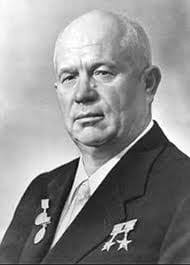

Russische Revolutionen und Etablierung der Sowjetmacht (1917–1918)
1917 erschütterten zwei Revolutionen das Russische Reich. Im Februar stürzte eine Volksrevolution den Zaren, und eine provisorische Regierung übernahm die Macht. Im Oktober folgte die bolschewistische Revolution unter Lenin, die zur Errichtung einer kommunistischen Regierung führte. Die Bolschewiki übernahmen zentrale Machtinstrumente und gründeten die „Sowjetmacht“ – eine Herrschaftsform basierend auf Arbeiter- und Soldatenräten (Sowjets).
Bürgerkrieg (1918–1922)
Nach der Oktoberrevolution brach ein Bürgerkrieg zwischen den „Roten“ (Bolschewiki) und den „Weißen“ (antikommunistische Kräfte) aus. Verschiedene ausländische Mächte unterstützten die Weißen. Trotz großer wirtschaftlicher Not und Gewalt setzten sich die Bolschewiki durch. Der Krieg festigte die Macht der Kommunisten, hinterließ jedoch ein verwüstetes Land.
Entstehung der Sowjetunion (1922)
Am 30. Dezember 1922 wurde die Union der Sozialistischen Sowjetrepubliken (UdSSR) gegründet, bestehend zunächst aus Russland, der Ukraine, Weißrussland und Transkaukasien. Die UdSSR wurde als föderaler Vielvölkerstaat mit zentraler Führung organisiert, de facto aber stark von Moskau dominiert. Dies war der formelle Beginn des sowjetischen Staates.
Beginn der Stalin-Ära (1922–1930)
Nach Lenins Tod 1924 setzte sich Josef Stalin schrittweise als alleiniger Machthaber durch. Bereits ab 1922 hatte er als Generalsekretär der Kommunistischen Partei wachsenden Einfluss. In den späten 1920er Jahren beseitigte er seine innerparteilichen Rivalen (z. B. Trotzki) und etablierte eine Diktatur. Die Planwirtschaft und Industrialisierung wurden vorangetrieben.
Zwangskollektivierung und Terror (1930–1940)
Stalin ließ die Landwirtschaft zwangsweise kollektivieren – Kleinbauern wurden in Kolchosen gezwungen, der Widerstand brutal unterdrückt. Millionen starben, insbesondere während der Hungersnot in der Ukraine (Holodomor). Gleichzeitig begann der „Große Terror“: Massenverhaftungen, Schauprozesse, Deportationen und Hinrichtungen politischer Gegner und „Volksfeinde“ prägten diese Jahre.
Zweiter Weltkrieg (1939–1945)
Die UdSSR schloss 1939 einen Nichtangriffspakt mit Nazi-Deutschland (Hitler-Stalin-Pakt) und besetzte Teile Osteuropas. 1941 begann Deutschland den Angriff auf die Sowjetunion (Unternehmen Barbarossa). Nach schweren Verlusten konnte die Rote Armee das Blatt wenden (z. B. Sieg bei Stalingrad 1943) und schließlich Berlin 1945 erobern. Die UdSSR wurde als Siegermacht zur Supermacht.
Zeit des Kalten Kriegs (ab 1947)
Nach dem Zweiten Weltkrieg entstand ein ideologischer und politischer Konflikt zwischen der UdSSR und den westlichen Staaten, vor allem den USA. Der Kalte Krieg war geprägt von einem Wettrüsten, Stellvertreterkriegen (z. B. Korea, Vietnam), der Teilung Deutschlands und der Bildung gegensätzlicher Bündnissysteme (NATO vs. Warschauer Pakt). Offene Kriege zwischen den Supermächten wurden vermieden, aber die Spannungen bestimmten die Weltpolitik.
Ära Chruschtschows (1953–1964)
Nach Stalins Tod 1953 übernahm Nikita Chruschtschow die Führung. Er leitete eine Phase der Entstalinisierung ein: politische Gefangene wurden freigelassen, der Terror verurteilt. In der Innenpolitik setzte er auf Reformen, außenpolitisch verfolgte er eine aggressive, aber auch diplomatische Linie (z. B. Kuba-Krise 1962). 1964 wurde er intern entmachtet.
Quellen
- Wikipedia.com
- Google.com
- Historynet.com
- Deutsch.Radio.cz